第八讲 多态性与虚函数（图解系统笔记）
学习路线
- 8.1 多态性概念与分类：同一消息、静态联编、动态联编，区分静态类型和动态类型。
- 8.2 为什么引入虚函数：赋值兼容、基类指针/引用、非虚函数的局限、对象切片。
- 8.3 虚函数定义及使用：
virtual、override、动态分派、虚表、调用阶段、虚析构。 - 8.4 多重继承与虚函数：菱形继承、虚继承、不同指针视角下的调用。
- 8.5 纯虚函数与抽象类：
= 0、抽象接口、派生类实现与多态应用。 - 补充附录：学生管理程序、典型图形作业、校订说明与判断速查。
一、8.1 多态性概念及分类（课件第 3 页）
1.1 多态性究竟是什么
多态性（polymorphism）：不同对象收到相同消息时，可以产生不同的反应与行为。对象可以同样提供 Who()、Area() 等接口，但执行行为各不相同。这使调用者能够围绕统一接口编程，降低与具体类型的耦合。
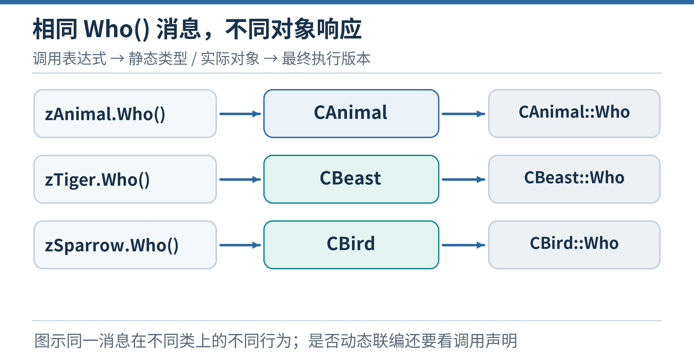
图：CAnimal、CBeast、CBird 都响应 Who()；“表现不同”是多态的直观现象，是否为运行时多态还需要进一步判断。
1.2 静态多态：编译时联编
**联编（binding）**是把某个函数调用表达式与具体函数实现联系起来的过程。静态联编在编译期能够确定调用目标，最典型的是函数重载及运算符重载。
void Print(int x) { // int 版本
std::cout << x << '\n'; // 输出整数
}
void Print(double x) { // double 版本
std::cout << x << '\n'; // 输出浮点数
}
Print(3); // 编译期选择 Print(int)
Print(2.5); // 编译期选择 Print(double)
以上片段假定程序已包含 <iostream>，并处于允许调用 Print 的函数体内。参数类型是编译期选择重载函数的主要依据之一。
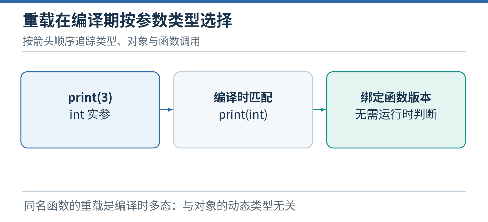
图：Print(3) 从实参类型到最终重载版本的编译期匹配过程。
1.3 动态多态：运行时联编
动态联编指特定虚函数调用的执行版本，要依据运行时对象的实际类型确定。核心构造是：继承关系 + 基类虚函数 + 派生类重写 + 经合适的基类指针或引用调用。
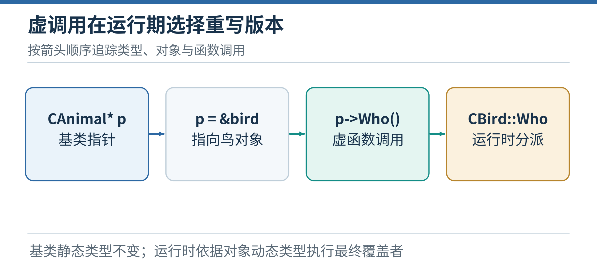
图：CAnimal* 的静态类型保持不变，p->Who() 却可以在运行时选中 CBird::Who()。
1.4 最容易混淆：静态类型和动态类型
CBird bird; // 创建 CBird 对象
CAnimal* p = &bird; // p 的静态类型是 CAnimal*
p->Who(); // 是否动态分派，取决于 CAnimal::Who 是否为虚函数
- 静态类型（static type）：由表达式、声明在编译期确定。
p的类型是CAnimal*；通过p调用成员时以CAnimal视角进行名称查找和访问检查。 - 动态类型（dynamic type）：对象在运行时的实际类型，此处为
CBird。 - 声明为虚函数：使符合要求的成员调用能够按动态类型选择最终覆盖者（final overrider）。
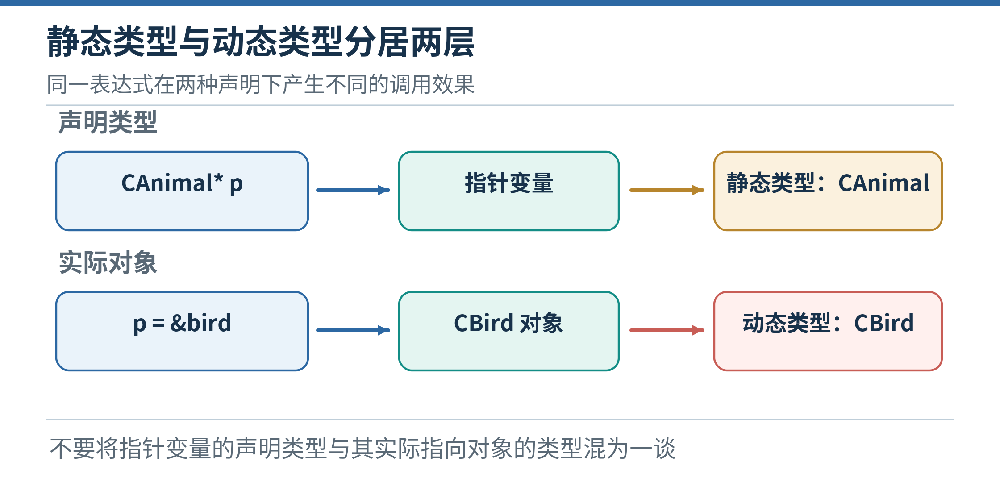
图：指针变量的声明类型与所指对象实际类型并不是同一件事。
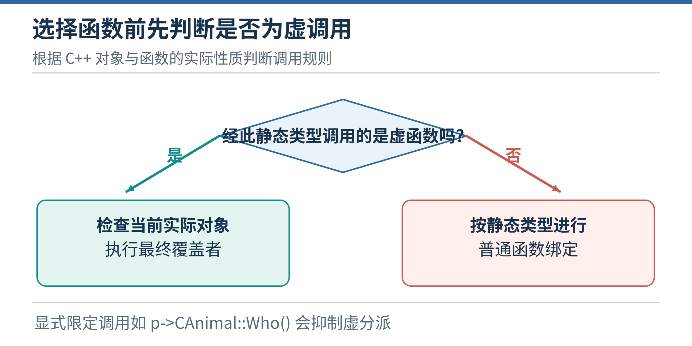
图：先判断调用是否具有虚特性，再判断实际对象；不能只看到派生对象就认定会调用派生版本。
| 维度 | 静态多态 | 动态多态 |
|---|---|---|
| 典型机制 | 函数重载、运算符重载 | 虚函数重写 |
| 决定调用的时间 | 编译期 | 运行期（语义上） |
| 主要依据 | 实参类型、可见重载及转换规则 | 虚声明、实际对象和最终覆盖者 |
| 是否必需继承 | 不必 | 本课典型场景需要继承 |
| 优势 | 简洁、可提前检查与优化 | 统一接口下灵活扩展派生类型 |
二、8.2 虚函数为什么有必要（课件第 5～13 页）
2.1 赋值兼容原则与向上类型转换
公有继承（public）表达一种可替代关系：在适当场景中，派生类对象可以当作基类对象使用。但要分清三种操作：
- 基类指针指向派生对象：
CAnimal* p = &bird;，对象本身没有被复制。 - 基类引用绑定派生对象：
CAnimal& r = bird;，同样不创建新对象。 - 用派生对象初始化基类对象：
CAnimal a = bird;，会构造一个新的基类对象，发生对象切片（slicing）。
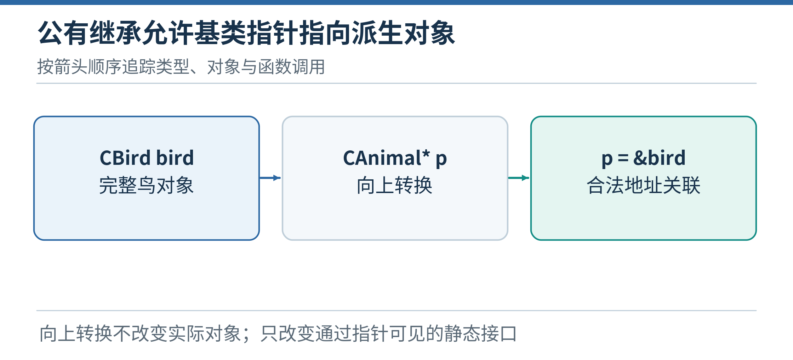
图：向上转换是改变访问视角，不会把派生对象本身变成基类对象。
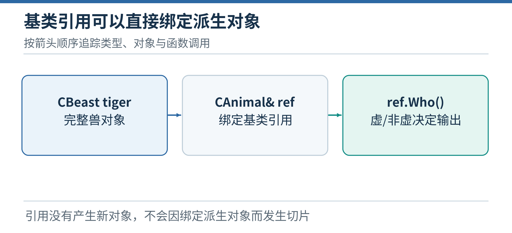
图：引用同样保持原有对象身份，后续是否调用派生函数由虚特性决定。
2.2 没有 virtual 的森林动物案例
课件第 8～12 页设计了 CAnimal、CBeast 和 CBird。在没有虚函数时，三个类各有同名无参 Who()，并分别输出以下信息：
CAnimal::Who()：我不是飞禽就是走兽！CBeast::Who()：我是森林之王！CBird::Who()：我是一只小小鸟！
以下是整理后的核心 C++ 示例（与 PPT 逻辑一致，更新为标准头文件和入口）：
#include <iostream> // 标准输入输出库
class CAnimal { // 动物基类
public:
void Who() { // 非虚函数
std::cout << "动物版本\n"; // 基类输出
}
};
class CBeast : public CAnimal { // 兽类公有继承动物
public:
void Who() { // 同名函数，但并非虚重写
std::cout << "兽类版本\n"; // 派生类输出
}
};
int main() {
CBeast tiger; // 创建兽类对象
CAnimal* p = &tiger; // 基类指针指向兽类对象
p->Who(); // 输出“动物版本”
tiger.Who(); // 输出“兽类版本”
return 0; // 程序正常结束
}
这里 p->Who() 的静态类型视角是 CAnimal，而 CAnimal::Who() 不是虚函数，所以编译期绑定基类版本。
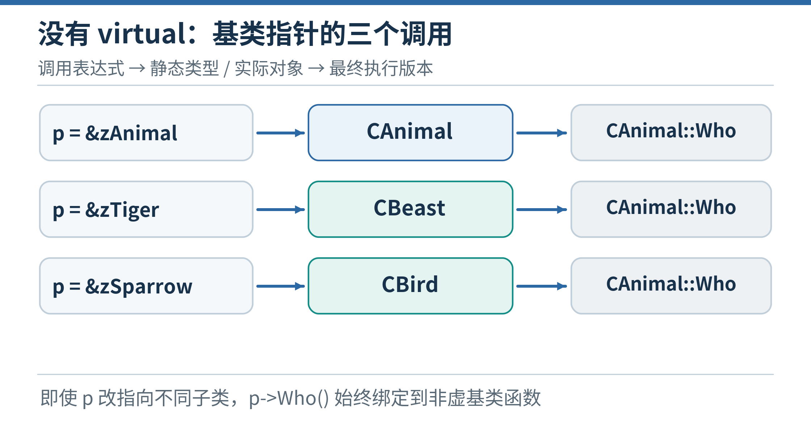
图：即使 p 先后指向动物、老虎、鸟，非虚 p->Who() 的最终函数始终是基类版本。
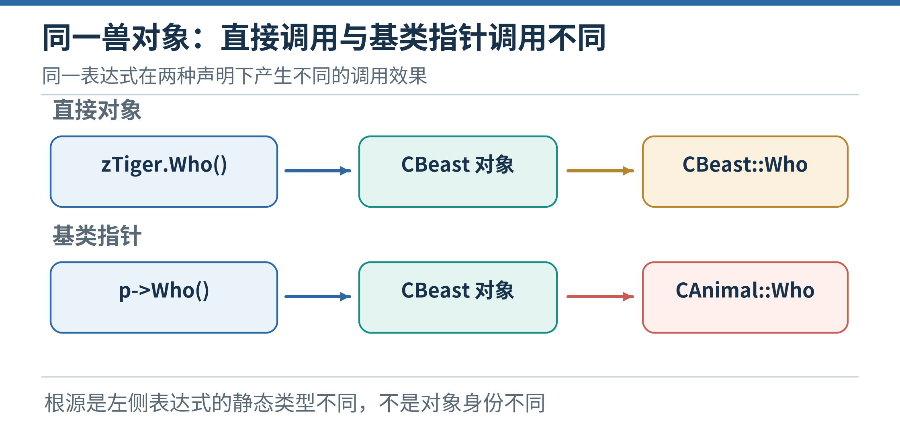
图：两个表达式访问同一个兽对象，因表达式静态类型不同而输出不同内容。
2.3 基类引用作为参数时仍会遇到同样的问题
void Show(CAnimal& animal) { // 引用形参的静态类型是 CAnimal
animal.Who(); // 若非虚，调用 CAnimal::Who()
}
// Show(tiger); // 向上转换合法，但不会自动动态分派
函数参数是引用可以避免切片，但并不自动保证虚函数多态。这也是课件第 11 页基于引用参数的三次 Show 均输出基类消息的原因。
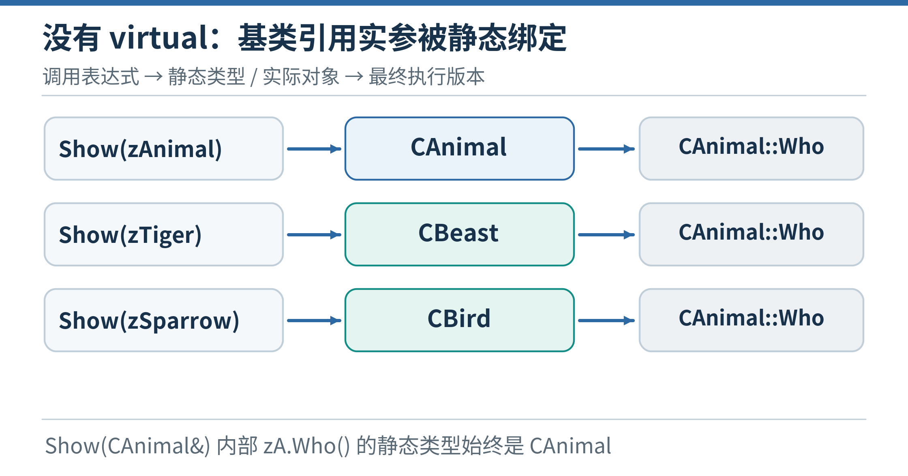
图：参数的实际对象不同，但 Show(CAnimal&) 中的非虚函数绑定结果不变。
2.4 强制类型转换不是通用解决方案
课件第 13 页示意通过把基类指针强转为某个派生类指针，再调用派生函数。这依赖你能确信所指对象的真实类型；假如判断错了，可能出现未定义行为。
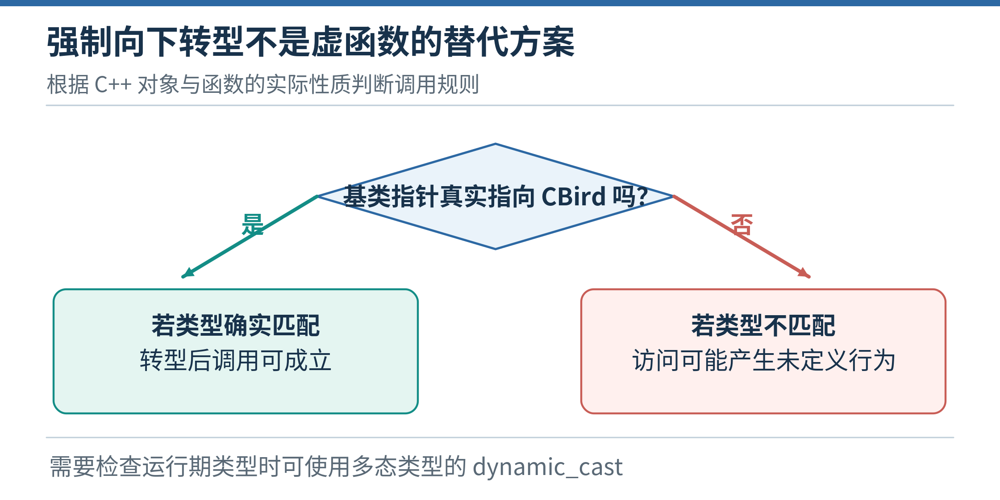
图：向下转型必须确认真实类型；不要把未经检查的 C 风格强制类型转换当作多态机制。
必要补充：对于具有至少一个虚函数的多态基类，可在适用场景使用 dynamic_cast<CBird*>(p) 检查转换；若不需要知道具体派生类型，优先直接设计虚接口。
2.5 对象切片与指针/引用多态的边界
CBird bird; // 创建派生对象
CAnimal animal = bird; // 只把 CAnimal 子对象复制出来
CAnimal& ref = bird; // 引用仍绑定完整的 CBird 对象
对象切片后，animal 是独立的 CAnimal 对象，即使 Who() 是虚函数，animal.Who() 也只对应 CAnimal 动态类型；对 ref.Who() 的虚调用则仍能选择 CBird 的重写版本。
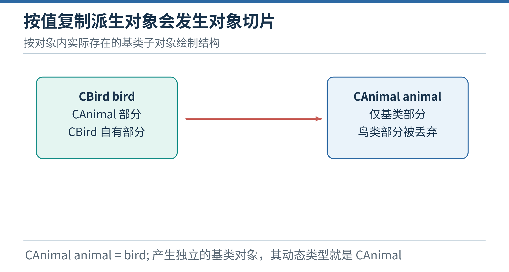
图：按值复制让派生部分丢失；指针或引用绑定不切片。
三、8.3 虚函数的定义、覆盖与使用（课件第 15～32 页）
3.1 virtual 的基本语法
在基类声明中用 virtual 修饰非静态成员函数：
class CAnimal { // 基类
public:
virtual void Who(); // 声明虚函数
virtual ~CAnimal() = default; // 支持通过基类指针安全删除对象
};
class CBird : public CAnimal { // 派生类
public:
void Who() override; // 表示必须正确覆盖基类虚函数
};
override 是 C++11 起的明确检查标记；PPT 旧例中没有它，但建议所有重写虚函数的派生类都加。基类 virtual 一旦建立虚特性，沿相应覆盖链继续传递；派生类即使省略 virtual，对应重写仍为虚函数。
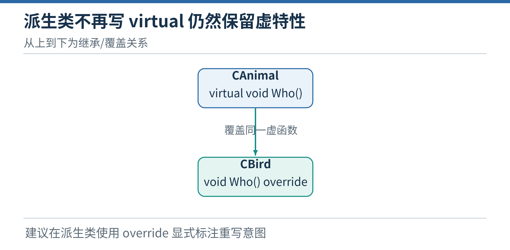
图：虚特性从基类继承，派生类的 override 使重写关系更明确。
3.2 加 virtual 后的实际结果
只要在原先动物例程的 CAnimal::Who() 声明前加 virtual，而保留 CBeast::Who()、CBird::Who() 对应实现，基类指针调用结果就发生改变。
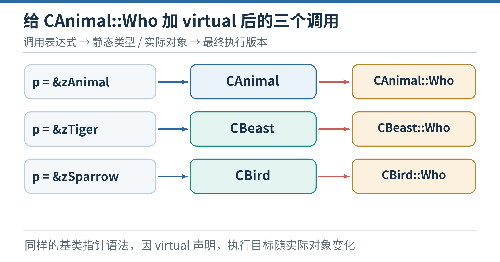
图：同一 CAnimal*，依次指向动物、兽、鸟，按对象动态类型选择不同函数版本（课件第 19 页）。
原因分三层：
- 编译期确认调用的是
CAnimal::Who()所代表的虚函数接口。 - 运行时指针实际指向
CAnimal、CBeast或CBird的完整对象。 - 调用最终覆盖者：基类对象调用基类版本，兽对象调用兽版本，鸟对象调用鸟版本。
3.3 引用与指针形参：只写一次 Show
void Show(CAnimal& animal) { // 基类引用参数
animal.Who(); // 经引用发起虚调用
}
void Show(CAnimal* animal) { // 基类指针参数
if (animal != nullptr) { // 先判断指针非空
animal->Who(); // 经指针发起虚调用
}
}
这两个 Show 函数在同一代码作用域下构成函数重载，选择哪一个 Show 是静态的；进入所选 Show 后的 Who() 虚分派则是动态的。这说明一次程序中静态重载与动态多态可以同时存在。
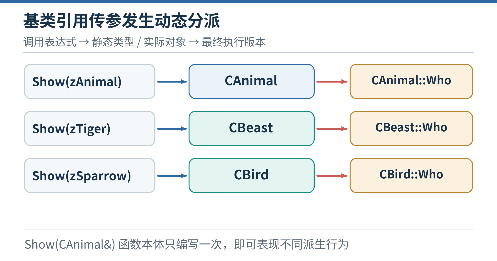
图：课件第 20 页——同一个引用形参函数按实际对象执行各自的 Who()。
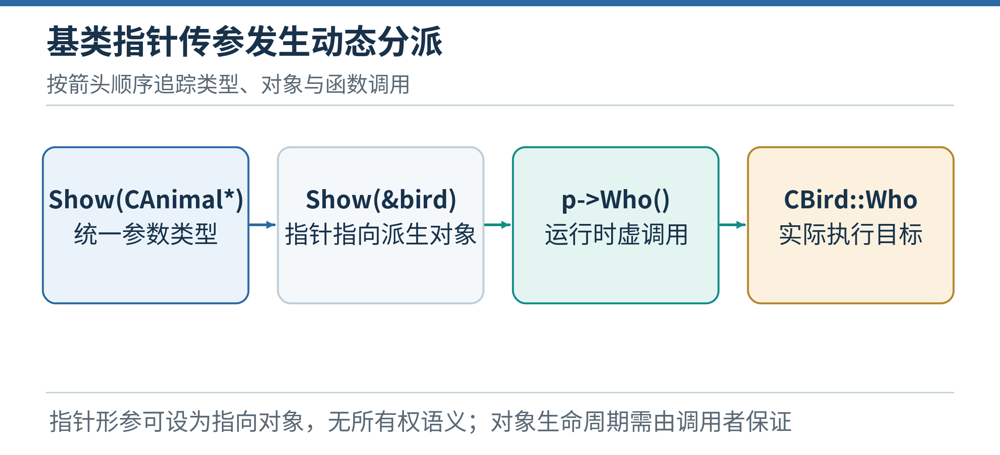
图：课件第 21 页——指针形参也能形成同样的动态分派，且允许统一传参。
3.4 非虚成员函数可以在内部调用虚函数
课件第 22、31～32 页把 Show() 放在基类中，Show() 本身不声明为虚函数，但它在内部调用虚函数 Who()：
class CAnimal { // 定义动物基类
public:
void Show() { // 普通非虚成员函数
std::cout << "开始介绍\n"; // 统一输出前缀
Who(); // 仍会发起虚调用
}
virtual void Who() { // 虚成员函数
std::cout << "动物版本\n"; // 默认实现
}
virtual ~CAnimal() = default; // 安全的多态析构接口
};
如果 p 的静态类型为 CAnimal*、实际指向 CBird，那么 p->Show() 在非虚成员函数 CAnimal::Show() 中执行，但其中的 Who() 仍会动态分派到 CBird::Who()（前提是对象已经完整构造、且不是构造/析构期间的特殊情形）。
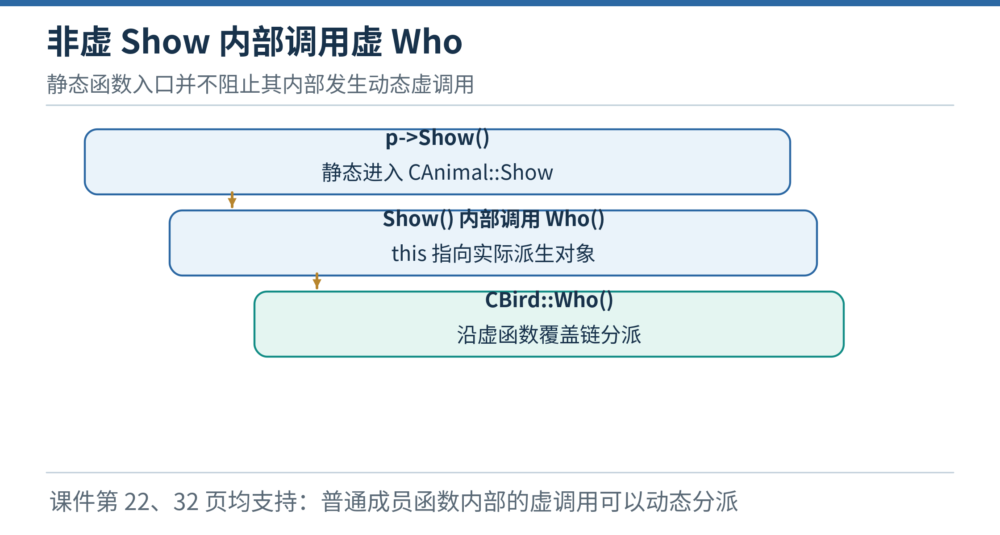
图：固定进入基类 Show() 与内部虚调用动态进入派生 Who()，是两次不同的函数选择。
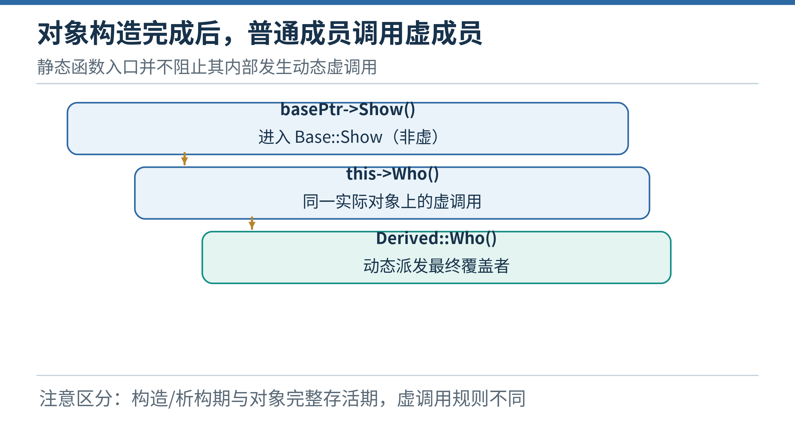
图：完整对象存活期间，this 保持实际对象身份，普通成员函数内部可调用派生重写版本。
3.5 重写（override）、重载（overload）和同名隐藏（hiding）
重写要求匹配同一个虚函数的函数名、参数类型与必要的 const / 引用限定符；返回类型通常匹配，存在特定协变返回例外。重载主要是同一作用域中同名但参数列表不同。同名隐藏则是派生类声明某个名字，使基类同名函数在普通名称查找时被隐藏，并不等于重写。
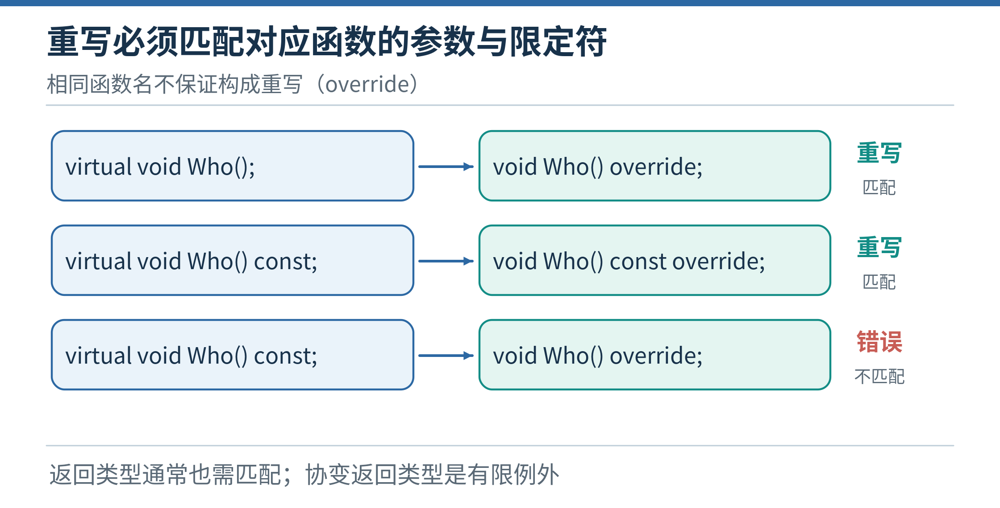
图：只有签名符合虚函数覆盖规则，派生版本才能真正 override。
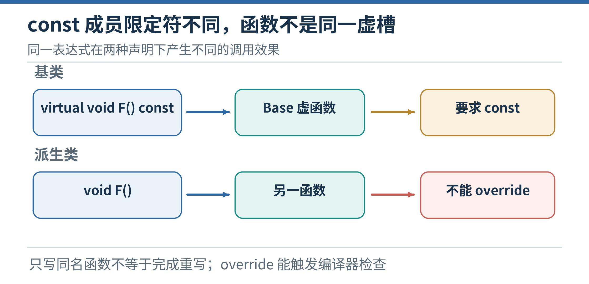
图：void F() 和 void F() const 是不同成员函数，不能误以为只要同名就是重写。
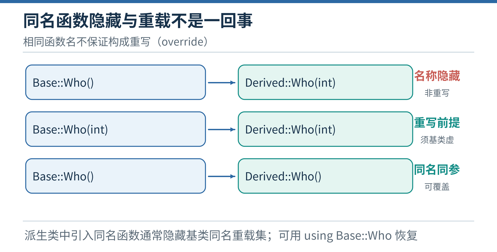
图：Derived::Who(int) 会隐藏基类的同名成员；是否重写还取决于是否存在匹配的虚函数。
class Base { // 基类
public:
virtual void F() const {} // const 虚函数
};
class Derived : public Base { // 派生类
public:
void F() const override {} // 匹配并覆盖基类虚函数
};
如果把 Derived::F() const 错写成 Derived::F()，override 会让编译器报错，防止“看起来重写了，实际没有重写”的错误。
补充：协变返回类型允许特定的指针/引用返回：
class Base { // 基类
public:
virtual Base* Clone() const; // 返回指向基类的指针
};
class Derived : public Base { // 派生类
public:
Derived* Clone() const override;// 合法的协变指针返回类型
};
该例展示合法的声明关系，不是一个已实现的可独立链接程序。
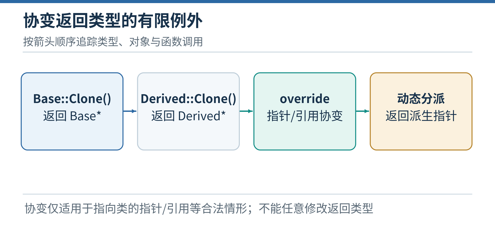
图：协变返回类型的实质是：派生重写函数可返回更具体的派生类型指针或引用，且必须满足标准规定的条件。
3.6 有时即使是虚函数，也可以明确调用基类版本
使用限定名 p->CAnimal::Who()，是明确要求调用该基类实现，不走普通的虚分派。和此不同，p->Who() 正常按虚函数机制工作。
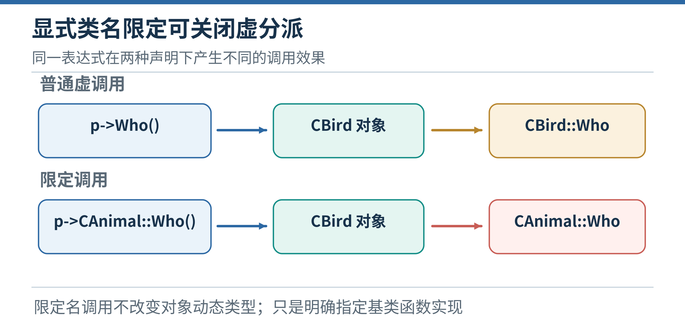
图：显式 CAnimal:: 限定是对调用方式的改变，不是对实际对象类型的改变。
3.7 虚函数的运行原理：理解 vptr 与 vtable，但不要把它当作标准规定的内存格式
C++ 标准规定运行时虚调用的行为，不强制所有编译器使用某种固定的对象布局。在常见实现模型中：
- 带有虚函数的对象会保存某种虚调度相关信息（常用示意名为
vptr）。 vptr可关联一张虚函数表vtable，表的条目对应特定虚函数槽位。- 派生类覆盖虚函数时，对应表项可指向派生版本。
- 同一个动态类型的不同对象可能共享一张表；不要据此假定表的固定顺序、字节数或对象中偏移。
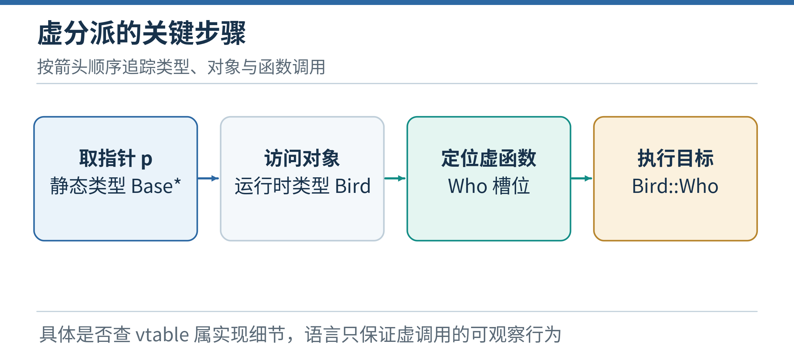
图：由基类指针开始，识别对象实际类型并选定最终覆盖者。
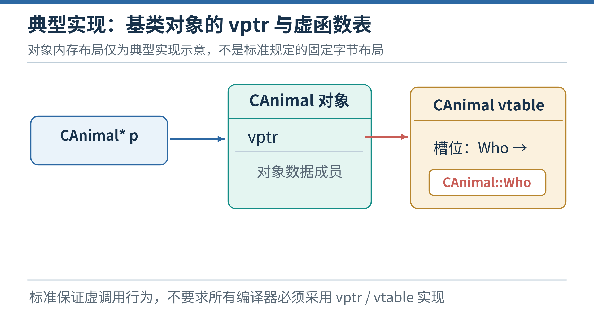
图：基类对象在典型 vptr / vtable 模型下的示意布局。
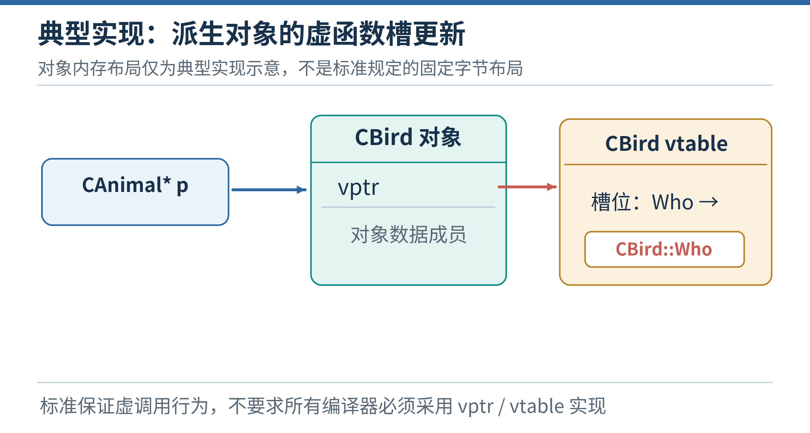
图：派生对象将 Who 对应的常见虚表条目指向派生版本。
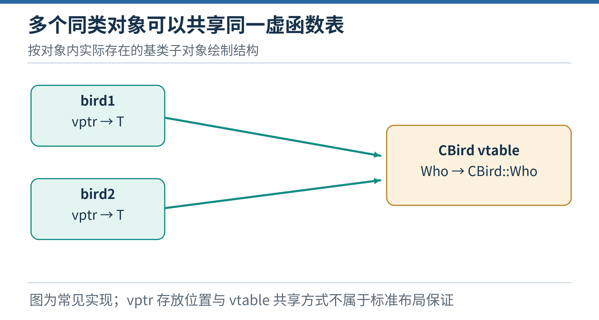
图：两个相同派生类型对象可有各自的 vptr，但共用虚表信息。
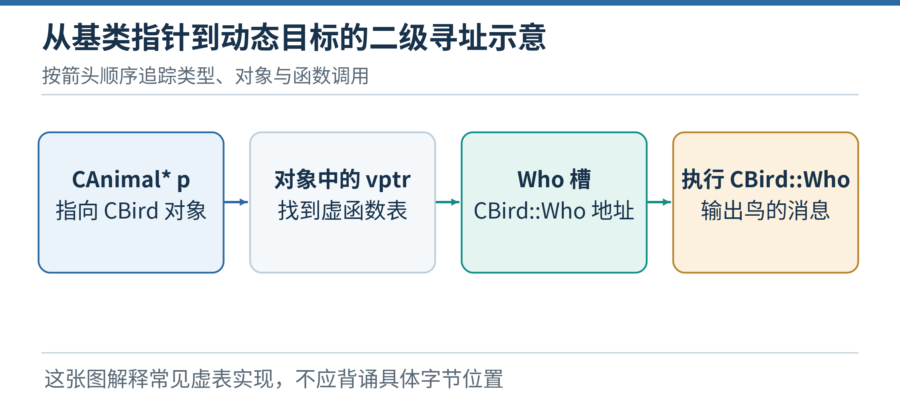
图：典型实现中“基类指针 → 对象 → 虚表槽位 → 派生函数”的调用链。
3.8 构造函数与析构函数中的虚调用：非常重要的例外
课件第 27～29 页的基类构造函数调用 Who()，即使该函数是虚函数，在基类构造阶段也只调用基类版本。原因是派生类部分尚未完成构造，不可像完整派生对象那样分派。
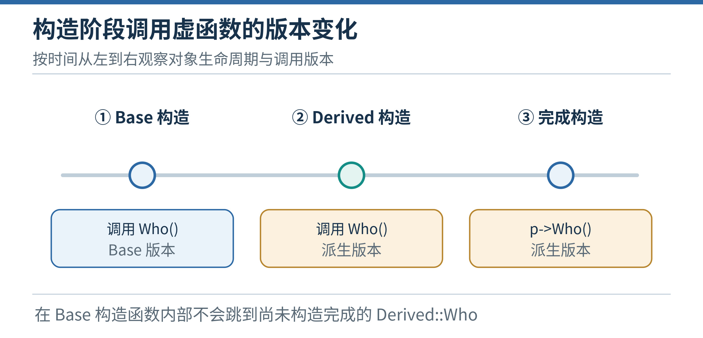
图：基类构造阶段、派生构造阶段和完整对象阶段的虚调用目标不同。
类似地，析构时先执行派生类析构函数，再执行基类析构函数；进入基类析构阶段时，已经不能动态分派到被销毁的派生部分。
图：析构阶段由最派生类逐层退回基类，虚函数调用遵守当前析构阶段的类身份。
#include <iostream> // 输入输出
class Base { // 基类
public:
Base() { F(); } // Base 构造阶段调用 Base::F
virtual void F() { // 基类虚函数
std::cout << "Base\n"; // 构造阶段输出 Base
}
virtual ~Base() = default; // 多态基类虚析构
};
class Derived : public Base { // 派生类
public:
void F() override { // 覆盖 F
std::cout << "Derived\n"; // 正常虚调用选中此版本
}
};
int main() { // 程序入口
Derived d; // 构造 Base 时输出 Base
Base& ref = d; // 基类引用绑定完整派生对象
ref.F(); // 输出 Derived
return 0; // 正常结束
}
3.9 虚析构函数是多态基类的重要设计要求
如果经 Base* 删除由 new Derived 创建的对象，通常要求 Base 有虚析构函数，否则会出现未定义行为（不是简单地、必然地“只执行基类析构”）。
class Base { // 多态基类
public:
virtual ~Base() = default; // 允许安全的基类指针删除
};
class Derived : public Base { // 派生类
public:
~Derived() override = default; // 参与正确的虚析构链
};
Base* p = new Derived(); // 基类指针指向堆上的派生对象
delete p; // 先析构派生部分，再析构基类部分
以上 new / delete 片段需放在函数体内。
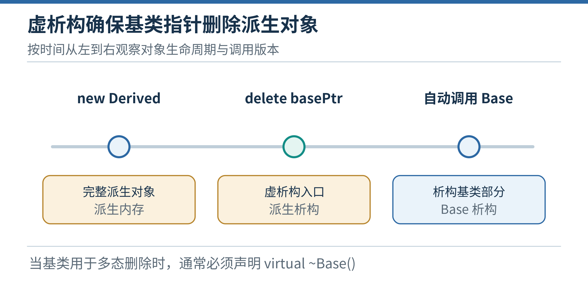
图：虚析构把通过基类指针的删除分派到完整派生对象的析构链。
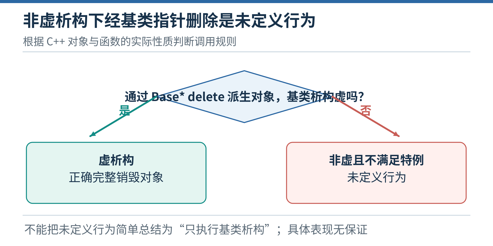
图：不具有合适虚析构机制时，通过基类指针删除派生对象可能是未定义行为。
3.10 哪些函数不能声明为虚函数？
- 构造函数：不能声明
virtual，对象的动态类型构建本身依赖构造过程。 - 静态成员函数：没有隐式的对象
this，不能声明为虚函数。 - 普通非静态成员函数：可以是虚函数。
- 析构函数：可以、而且多态基类通常应将其声明为虚函数。
- 类内定义的成员函数 /
inline函数：可以同时是虚函数，不能笼统说“内联函数不能虚”。是否真正内联展开是编译器优化问题。
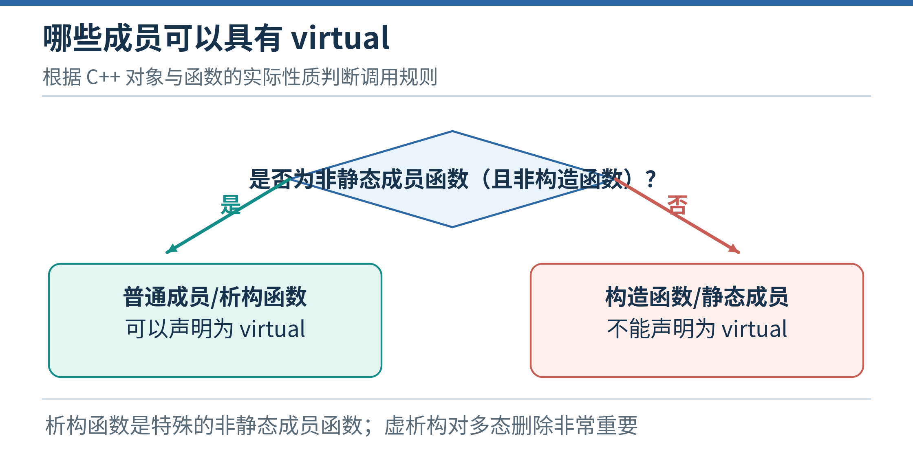
图：判断函数能否声明为 virtual，关键是它是不是可动态分派的非静态成员（析构函数允许）。
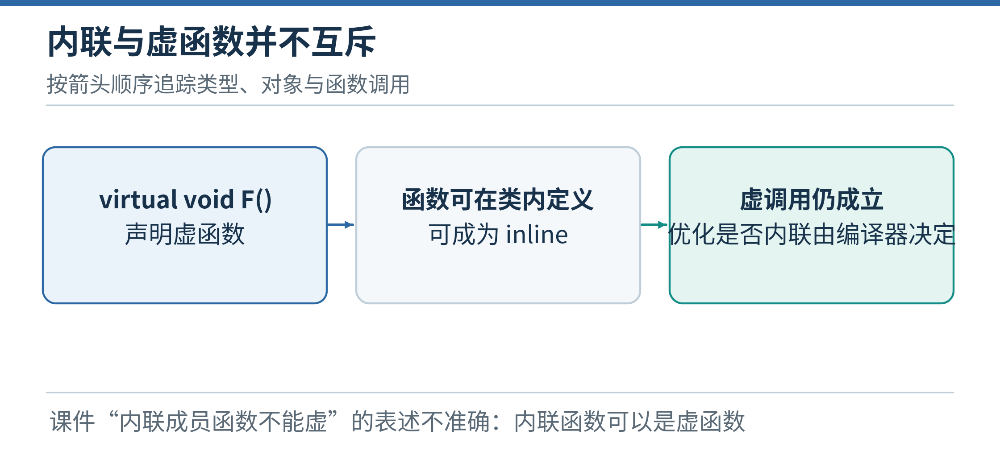
图：inline 与 virtual 作用不同，二者不是互斥概念。
3.11 现代 C++ 的 override 与 final
override 表示“这个函数必须覆盖某个基类虚函数”，不匹配时立即产生编译错误。final 可以禁止派生类继续覆盖特定虚函数，或禁止类继续被继承。
class Base { // 基类
public:
virtual void F() {} // 可覆盖的虚函数
};
class Middle : public Base { // 中间派生类
public:
void F() override final {} // 合法覆盖且禁止后续覆盖
};
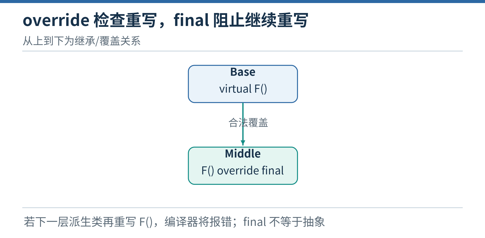
图：Middle::F 可以覆盖 Base::F，但下一层的同名重写将被 final 禁止。
四、8.4 多重继承与虚函数（课件第 33～40 页）
4.1 为什么会出现菱形继承问题
课件第 35～39 页新增蝙蝠类 CBat：蝙蝠同时具有兽类与鸟类两条继承链。若两条链都普通继承同一祖先类，最派生对象内可能有两份祖先基类子对象，导致重复状态与成员访问歧义。
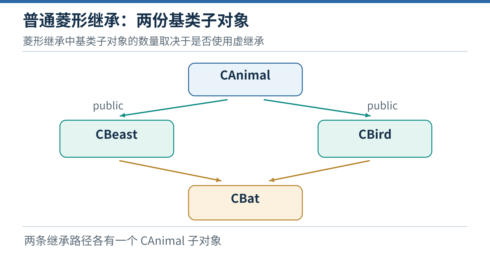
图：普通菱形继承，从 CBat 到 CAnimal 有两条子对象路径。
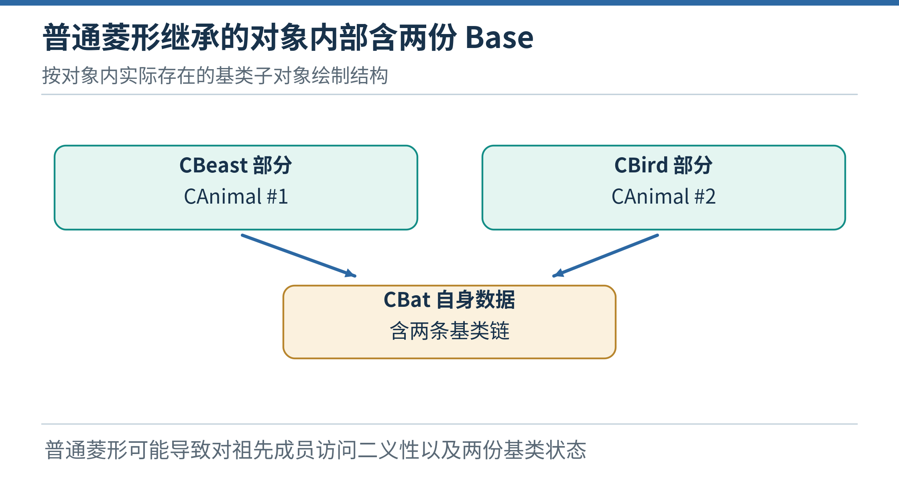
图：对象内部示意——普通继承情形可以包含独立的两份 CAnimal 子对象。
4.2 虚继承解决共享基类子对象的问题
课件中采用：
class CAnimal { // 共同祖先类
public:
void Who(); // 本例此时是非虚函数
};
class CBeast : virtual public CAnimal { // 虚继承共同祖先
public:
void Who(); // 兽类版本（非虚）
};
class CBird : virtual public CAnimal { // 与兽类共享同一祖先
public:
virtual void Who(); // 鸟类在此引入虚特性
};
class CBat : public CBeast, public CBird { // 同时继承兽类和鸟类
public:
void Who() override; // 覆盖 CBird::Who
};
virtual public CAnimal 与 virtual void Who() 虽都包含关键字 virtual，意义完全不同：
- 虚继承：在这种菱形体系下，让最派生类共享一份共同基类子对象。
- 虚函数：让特定函数调用可以按对象动态类型分派。
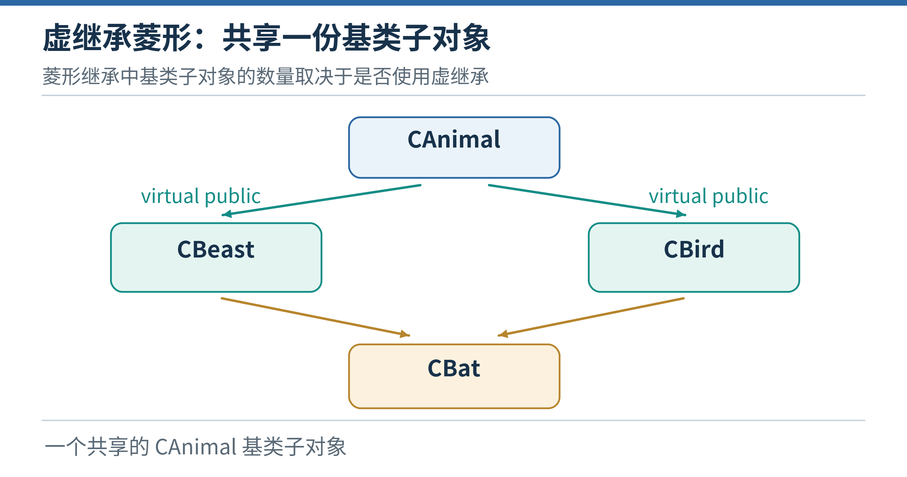
图：CBeast 与 CBird 虚继承 CAnimal 后，CBat 中只共享一个祖先子对象。
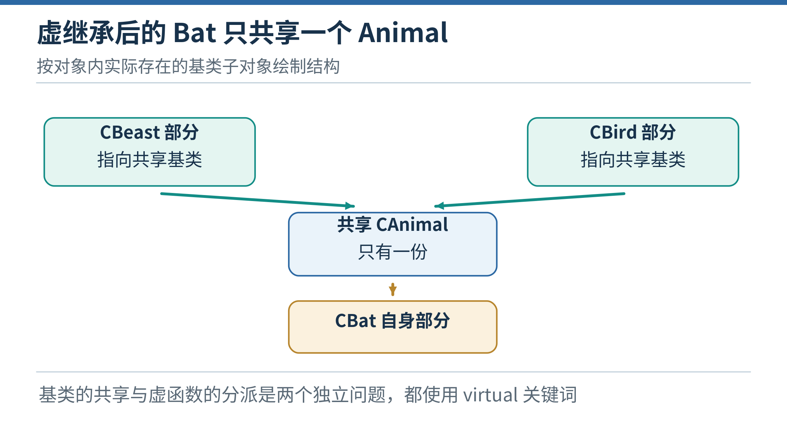
图：共享的基类状态不需要复制为两份；虚继承负责对象结构，而非 Who() 分派。
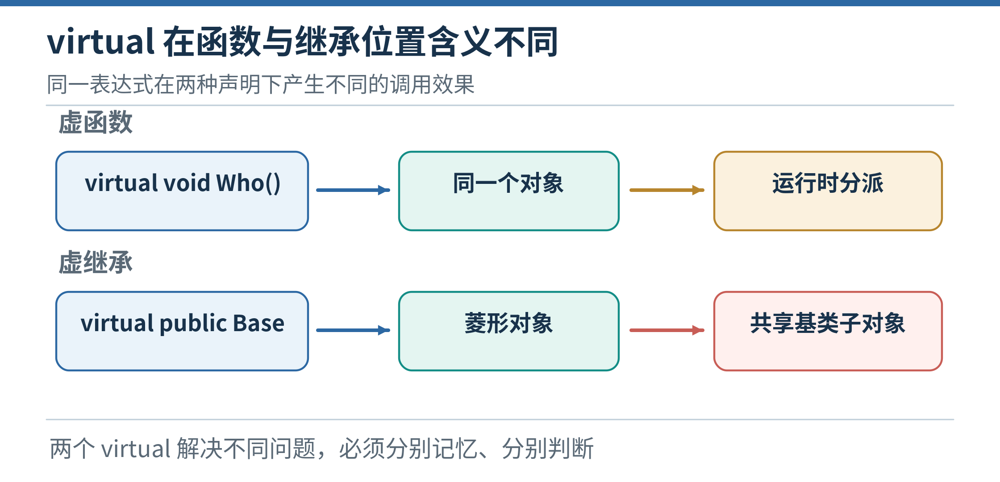
图：一边是函数分派，一边是继承结构，必须分别分析。
4.3 PPT 第 40 页的蝙蝠题：三个基类指针为什么输出不一样？
课件设置：CAnimal::Who() 非虚，CBeast::Who() 非虚，CBird::Who() 虚，CBat::Who() 覆盖鸟类的那个虚函数。
CBat bat; // 创建完整 CBat 对象
CAnimal* pa = &bat; // 共享的祖先基类指针
CBeast* pb = &bat; // 兽类基类指针
CBird* pc = &bat; // 鸟类基类指针
pa->Who(); // CAnimal::Who，非虚静态绑定
pb->Who(); // CBeast::Who，非虚静态绑定
pc->Who(); // CBat::Who，虚函数动态分派
这三个调用所指对象都是同一个 CBat。输出不同的真正原因是：经不同静态类型发起的函数调用，其虚特性不同。
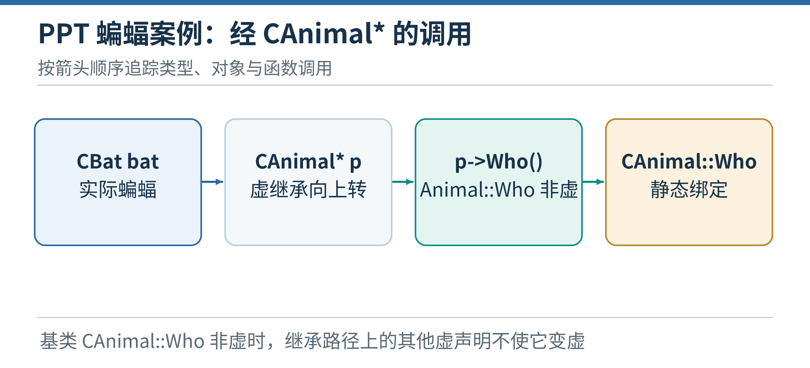
图：经 CAnimal* 调用，祖先 Who 非虚，因此执行祖先版本。
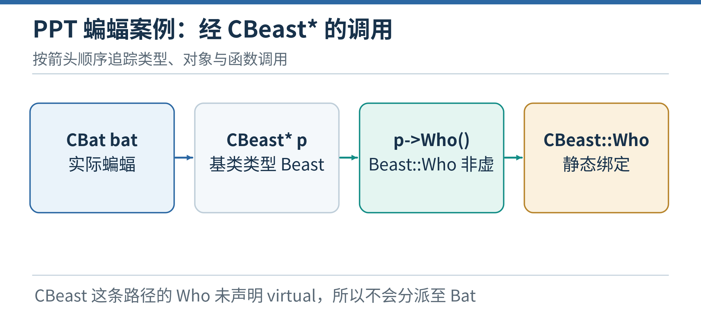
图：经 CBeast* 调用，兽类 Who 非虚，因此执行兽类版本。
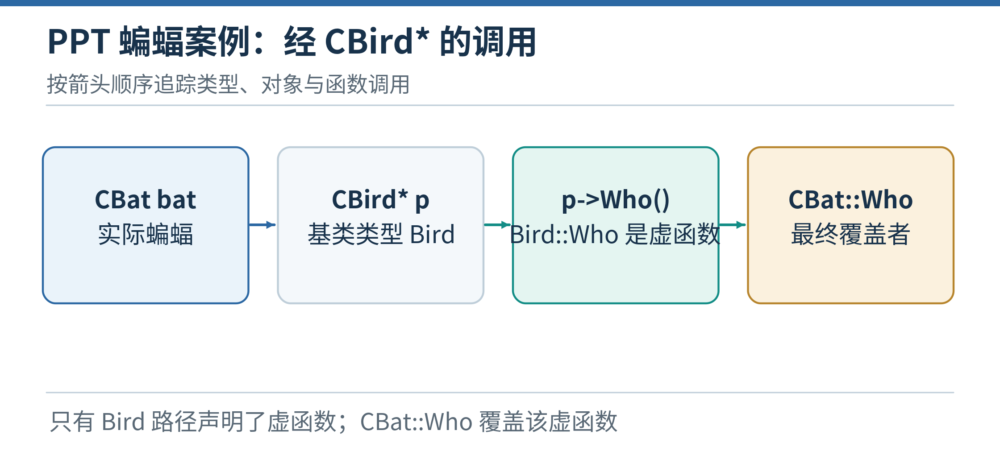
图：经 CBird* 调用，鸟类虚函数被 CBat 重写，执行蝙蝠版本。
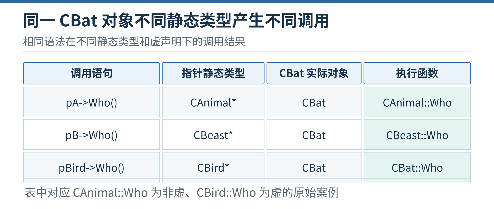
图：同一实际对象 + 不同指针静态类型 + 不同虚声明产生三种调用路径。
4.4 如果 CAnimal::Who 也改为虚函数，会怎样？
当最顶层 CAnimal::Who() 声明为虚函数时，这条虚特性传递到其派生链。CBeast::Who()、CBird::Who() 以及 CBat::Who() 都在相应继承关系下参与覆盖；最终对象是 CBat，其 Who() 是最终覆盖者。
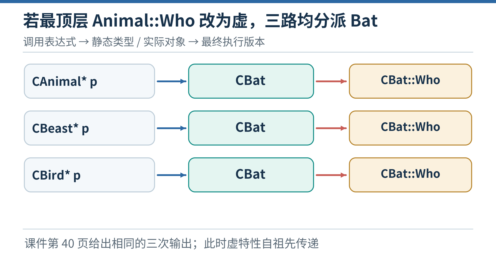
图：经 CAnimal*、CBeast*、CBird* 的虚调用全部执行 CBat::Who()。
4.5 多重继承对象地址与转换的细节
多重继承时，CBat* 转换为某个基类指针后，其数值地址可能发生调整，因为不同基类子对象可能位于完整对象的不同位置。不要凭 pa == pb 的表面写法来推断物理结构；不同基类指针甚至无法在未经转换时直接作常规比较。
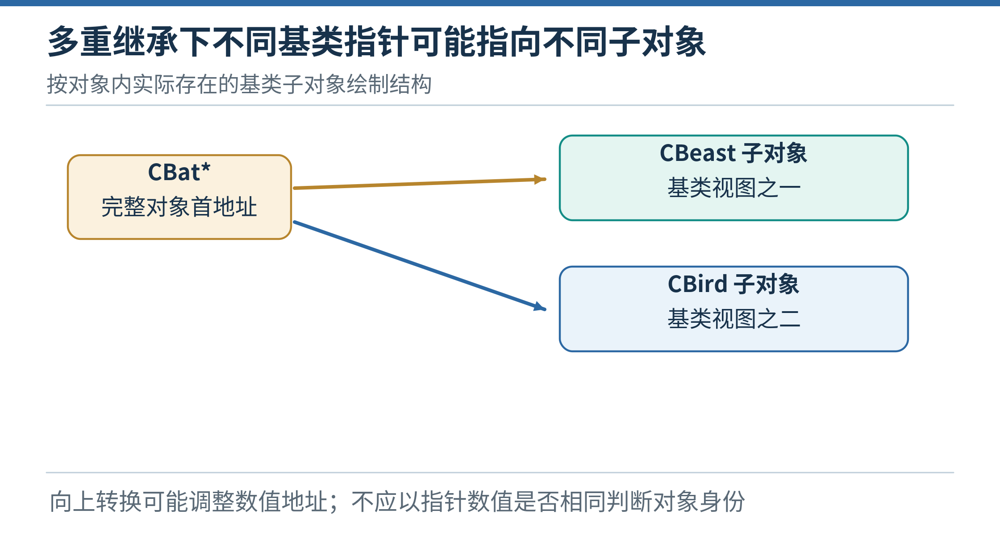
图：基类指针定位相应的子对象视图，不意味着每种指针都保存相同起始地址。
4.6 虚基类的初始化顺序
含虚继承时，最派生类负责初始化共享的虚基类。典型构造顺序是：先虚基类，再非虚直接基类，再非静态数据成员，最后执行最派生类构造函数体；具体基类和成员之间的先后顺序由标准规则与声明顺序决定。
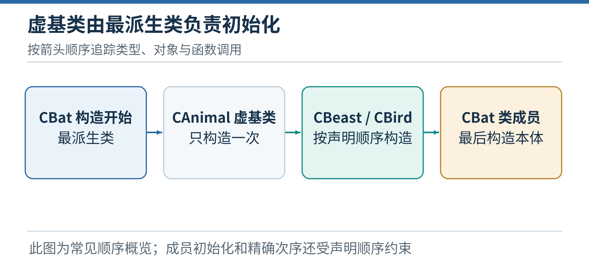
图：在蝙蝠类体系中，共享祖先 CAnimal 的构造仅发生一次。
4.7 同名成员与二义性
若两个基类分别提供相同名字的成员，而最派生类没有作出明确统一处理，那么直接 bat.F() 可能发生名称查找二义性。可以在最派生类重新定义合适接口，或通过 Base1::F() / Base2::F() 限定访问。
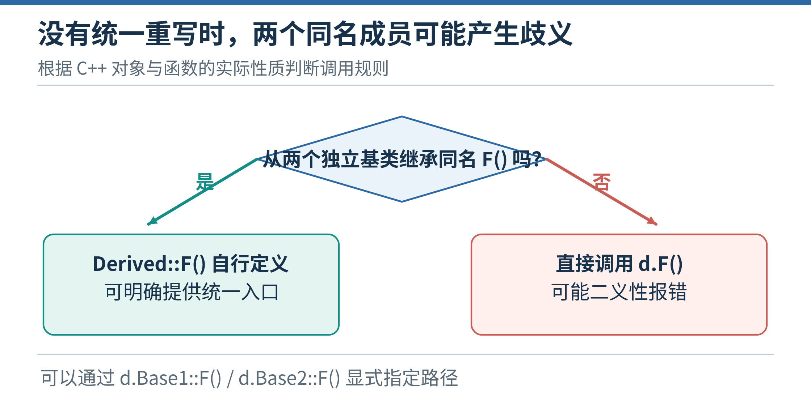
图：二义性不是虚函数分派本身；它首先属于成员名称查找与继承结构的问题。
五、8.5 纯虚函数与抽象类（课件第 42～46 页）
5.1 纯虚函数与抽象类的定义
纯虚函数（pure virtual function）：声明时使用 = 0 标记的虚函数，例如：
class CAnimal { // 抽象动物类
public:
virtual void Who() = 0; // 纯虚函数：定义统一接口
virtual ~CAnimal() = default; // 保证多态基类正确析构
};
抽象类（abstract class）：具有至少一个最终纯虚函数的类，不能直接实例化。它可以为派生类定义统一的访问接口。不能用 CAnimal a; 创建抽象对象，但可以定义 CAnimal*、CAnimal&，指向或绑定合适的具体派生对象。
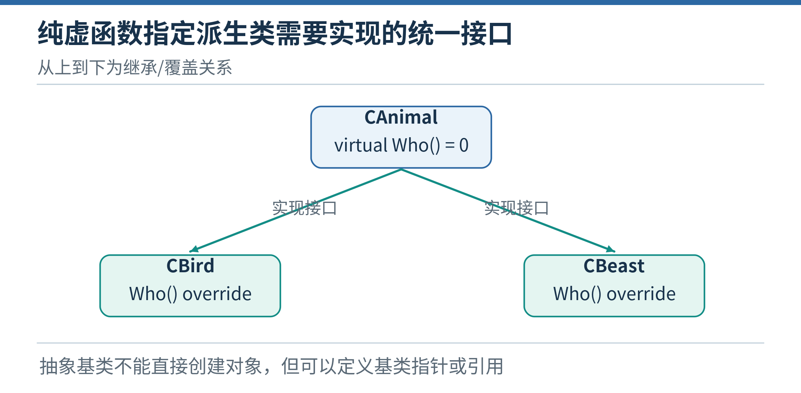
图：CAnimal 规定 Who() 接口；派生类各自实现，调用者不必直接依赖派生类型。
5.2 为什么不能定义抽象基类对象
课件第 45 页把 CAnimal::Who() 改为 virtual void Who() = 0;，第 46 页仍在例程里尝试定义 CAnimal zA，并追问“问题何在”。
问题所在：CAnimal 已经是抽象类，不能实例化；编译会失败。必须删除该对象定义，或者改为实际构造一个已实现所有纯虚函数的具体派生类对象，并通过基类指针/引用访问。
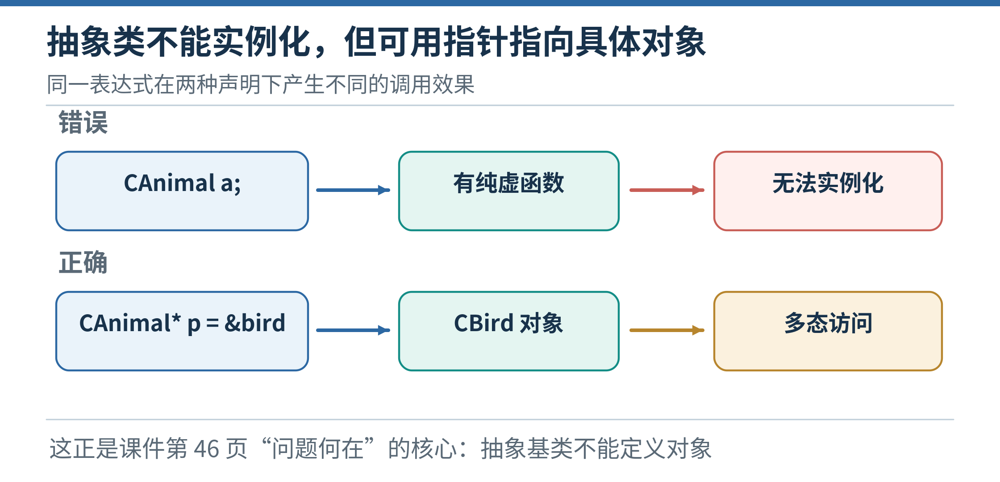
图：抽象类对象实例化是编译错误；抽象类型的指针与引用仍然有意义。
5.3 派生类没有全部实现纯虚函数时会怎样？
若派生类仍保留未实现的最终纯虚函数，它也仍然是抽象类。直到某个后续派生类给出了完整覆盖，才可以创建这种具体类的对象。
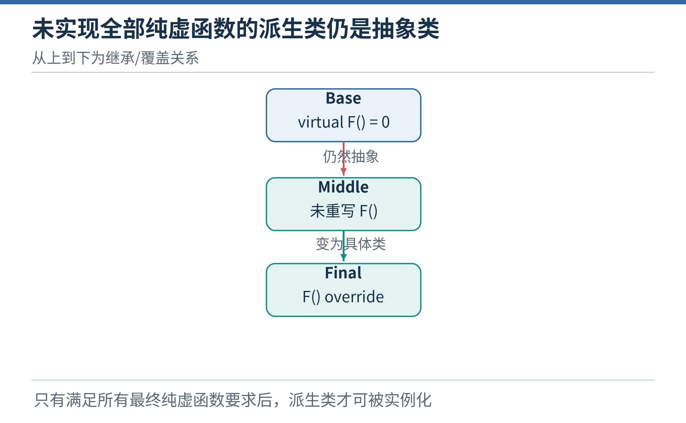
图：一个中间派生类可以仍是抽象类，而下一层类完成纯虚函数实现后才变成可实例化类型。
5.4 纯虚函数不等于没有函数定义，也不等于空函数
课件第 42 页用“没有实现体的函数”解释纯虚函数，是有助于初学者理解的直观说法，但需要补充：纯虚函数在 C++ 中也可以在类外提供定义，类仍然保持抽象。相反，virtual void F() {} 是一个有空函数体的普通虚函数，不会因为函数体为空就变成纯虚函数。
图：= 0 是纯虚声明的标志；空函数体 {} 与“纯虚”是不同的概念。
5.5 典型应用：抽象平面图形与面积计算
以下是围绕课件第 49 页“实现典型平面图形的处理”布置的理解性示例，并非 PPT 提供的详细原题：
#include <iostream> // 标准输出
class Shape { // 抽象图形基类
public:
virtual double Area() const = 0;// 各图形必须定义面积计算
virtual ~Shape() = default; // 正确析构多态对象
};
class Circle : public Shape { // 圆形派生类
double radius; // 保存半径
public:
explicit Circle(double r) : radius(r) {} // 初始化半径
double Area() const override { // 计算圆形面积
return 3.141592653589793 * radius * radius;
}
};
class Rectangle : public Shape { // 矩形派生类
double width, height; // 长和宽
public:
Rectangle(double w, double h) : width(w), height(h) {}
double Area() const override { // 计算矩形面积
return width * height;
}
};
int main() { // 程序入口
Circle circle(2.0); // 半径为 2 的圆
Rectangle rectangle(3.0, 4.0); // 宽 3、高 4 的矩形
const Shape* shapes[] = {&circle, &rectangle}; // 统一接口数组
for (const Shape* p : shapes) { // 逐个访问图形对象
std::cout << p->Area() << '\n'; // 虚调用各自的面积函数
}
return 0; // 正常结束
}
运行结果第一行约为 12.5664，第二行是 12（默认输出精度下）。注意 const Shape* 对应 Area() const；实现函数也必须保持 const，否则不能正确 override。
图：新增圆形、矩形、三角形时，都只需遵守 Shape::Area() 的统一接口。
图：三种具体几何形状及计算结果（圆半径 2、矩形 3×4、三角形底 6 高 3）。
5.6 纯虚析构函数是特别的情况（必要补充）
纯虚析构函数本身也能使类成为抽象类，但基类析构函数在派生对象销毁时始终需要执行，因此纯虚析构函数必须提供定义。
class Base { // 抽象基类
public:
virtual ~Base() = 0; // 纯虚析构声明
};
Base::~Base() {} // 纯虚析构必须有函数定义
图：即使声明为纯虚析构，实际析构链仍需执行 Base::~Base() 的定义。
六、PPT 附加内容：学生管理程序（第 50～54 页）
这一部分不是“多态性与虚函数”的主线，而是对之前知识的回顾和综合应用，作为附录保留，避免整套课件后半部分被忽略。
6.1 CStudent 的结构与静态重载
课件中的学生类包括：char mNo[9]（学号）、char* mpName（动态姓名）和 int mScore[5]（5 门成绩）；接口还包括默认构造、复制构造、析构、输入/显示、两种 Compare、友元比较函数与流操作符重载。
要分清：这里两个 Compare 成员函数的参数分别是 const CStudent& 与 const CStudent*，属于静态重载；operator>> / operator<< 属于运算符重载，不是虚函数覆盖。
图：Compare(zS2) 和 Compare(&zS2) 的参数形式不同，由编译期选择重载。
图：友元流操作符承担对象输入与格式化输出，并不具有运行时虚分派含义。
6.2 原始指针管理姓名时，为什么必须深拷贝？
若对象拥有自己分配的动态数组，默认成员逐一复制只会复制指针地址。两个对象随后若都析构，会尝试释放同一块内存，可能导致重复释放、悬空指针等严重问题。
图：两个 mpName 指向同一堆字符数组，是不正确的资源共享方式。
复制构造函数必须为副本单独分配存储空间，并复制实际字符内容。
图：深拷贝后的两个对象拥有独立的姓名数组，任何一方释放内存都不会破坏另一方。
课件第 53 页的核心意图是对姓名指针执行深拷贝。但应注意：默认构造将 mpName 设为 NULL 后，复制构造若直接写 strlen(zS.mpName)，当原对象未输入姓名时会对空指针调用 strlen，产生未定义行为。应先判断源指针是否为空。
图：复制构造时先分支判断源指针状态，再决定是否分配并复制字符数组。
CStudent::CStudent(const CStudent& other) : mpName(nullptr) { // 初始化空指针
for (int i = 0; i < 5; ++i) { // 复制五门课程成绩
mScore[i] = other.mScore[i];// 按元素复制数组
}
std::strcpy(mNo, other.mNo); // 复制学号字符数组
if (other.mpName != nullptr) { // 先检查姓名指针有效
int size = static_cast<int>(std::strlen(other.mpName)) + 1; // 含终止符
mpName = new char[size]; // 副本独立分配空间
std::strcpy(mpName, other.mpName); // 复制姓名字符
}
}
此片段是在已存在 mNo[9]、mpName、mScore[5] 成员的 CStudent 类环境下的定义，需要 <cstring> 头文件，且要求源对象成员已正确初始化、姓名满足以 \0 结尾的字符串契约。为了处理异常和赋值，实际现代程序更推荐 std::string。
6.3 输入与数组越界风险
课件用 char mNo[9] 存 8 位学号加字符串结束符；若直接 std::cin >> mNo，不限制输入长度，存在溢出风险。更推荐使用 std::string 作为学号、姓名存储；若必须保持数组，则需要显式限制输入大小并处理无效输入。
图：定长缓冲区无界输入有风险，使用 std::string 可简化安全管理。
6.4 构造、复制、析构全过程
图：从默认空指针、输入姓名、深拷贝到释放动态数组，梳理资源生命周期。
七、课程作业与巩固（第 49 页）
课件给出的作业主题是：实现典型平面图形的处理，没有展开完整评分标准。下述是便于学习的建议方案，不冒充老师给出的完整题目。
7.1 建议的类与接口设计
- 抽象基类
Shape：声明virtual double Area() const = 0;并提供虚析构。 Circle：保存半径并覆盖Area()；Rectangle：保存宽高并覆盖Area()。- 用
Shape*或Shape&写一个统一的计算/打印函数，要求无需判断具体类型即可调用。 - 进一步扩展：新增
Triangle，观察调用接口是否需要改动。
图：一份合理的抽象接口与两个具体图形类的继承方案。
图：基类指针数组如何统一处理多种图形并调用派生类面积计算。
7.2 四组关键自测
八、易错点统一辨析与课程资料校订
8.1 判断虚函数调用的四步法
图：从表达式静态类型出发，逐步核实虚特性、动态对象和最终覆盖者。
| 容易误判的说法 | 正确理解 |
|---|---|
| “指向派生对象，所以必调用派生函数” | 非虚函数仍按静态类型决定；必须先看调用是否为虚调用。 |
| “用引用参数就自动多态” | 引用避免切片，但被调用函数必须符合虚分派条件。 |
| “同名同参函数都算重写” | 必须匹配相应基类虚函数的覆盖规则，const 等限定符也要匹配。 |
| “普通成员函数内部调用虚函数一定调用本类版本” | 完整对象的正常虚调用仍可选派生最终覆盖者。 |
| “构造期一定调用最派生类虚函数” | 构造/析构期的虚调用遵循当前阶段的类。 |
| “菱形共享基类意味着所有函数都自动成为虚函数” | 虚继承仅影响共享子对象，函数虚特性需分别声明。 |
| “纯虚函数就是函数体为空” | = 0 才是纯虚声明；纯虚函数有时也有类外定义。 |
| “基类析构非虚也只是少调用一个析构函数” | 经基类指针删除动态派生对象，可能是未定义行为。 |
| “虚函数表是 C++ 强制的固定内存结构” | vptr / vtable 是常见实现模型，并非标准固定布局。 |
8.2 课件与现代标准 C++ 的差异清单
- 标准头文件：课件多次使用
#include <iostream.h>；现代 C++ 使用#include <iostream>，并通过std::cout/std::endl等命名空间成员输出。 - 程序入口：课件使用
void main()；标准 C++ 应使用int main()，并可返回0。 - 内联虚函数：课件第 15 页“静态/内联成员函数及构造函数不能是虚函数”的合并表述不准确。静态成员函数与构造函数不能是虚函数，但内联成员函数可以是虚函数。
- 普通函数内的虚调用：课件第 26 页“普通成员函数中调用虚函数”的简述不应解读为静态绑定；第 22、32 页的例程证明动态虚调用仍然有效。
- 重写与同名隐藏：第 15 页把不匹配情形概括为普通重载不够严谨，应区分覆盖失败、名称隐藏与确实的重载集；现代 C++ 用
override检查最可靠。 - 纯虚函数：第 42 页的“没有实现体”是便于理解的简化说法，标准 C++ 允许纯虚函数提供类外定义；纯虚析构函数还要求提供定义。
- 虚表布局：第 25 页的示意有教学价值，但不能据此推断某个编译器必然存在固定
vptr字段或表结构。 - 学生类复制：第 53 页
strlen(zS.mpName)需要先检查空指针，动态资源拥有者还需处理复制赋值，且默认构造后的成绩数组也应初始化；第 54 页定长字符数组输入存在边界问题。 - 强制转换：第 13 页的 C 风格派生指针转换不能替代动态多态，实际项目避免未经验证地向下转换。
- 本文现代补充：
override、final、std::string、dynamic_cast、虚析构及修订代码均为兼顾标准规范和可学习性的补充，未将其伪称为 PPT 原文。
8.3 最终速查表
| 情形 | 选择规则 | 关键结论 |
|---|---|---|
Base* 访问非虚 F() |
按静态类型 | 一般执行 Base::F |
Base* 访问虚 F() |
按实际对象的最终覆盖者 | 可执行 Derived::F |
Base& 访问虚 F() |
同上 | 引用也能动态分派 |
Base b = derived |
对象切片 | b 的动态类型为 Base |
p->Base::F() |
显式限定调用 | 抑制常规虚分派 |
Base 构造函数内调用虚 F() |
按当前构造阶段 | 不调用尚未构造的派生覆盖版本 |
Base 析构函数内调用虚 F() |
按当前析构阶段 | 不调用已析构的派生覆盖版本 |
| 虚继承共同祖先 | 共享基类子对象 | 不自动决定 F() 是否为虚 |
virtual F() = 0 |
定义纯虚函数 | 含未实现最终纯虚函数的类为抽象类 |
delete Base* 指向动态派生对象 |
通常要求基类虚析构 | 不满足相应规则可能发生未定义行为 |
附：可运行示例与图件使用说明
附件目录内 code/ 提供多组可编译的 C++17 小程序（非虚调用、虚函数与引用、菱形继承、纯虚图形、构造阶段、学生对象复制），用于独立验证本文主要结论；它们不替代正文中的分章节解释。
编译形式：在对应项目目录运行 g++ -std=c++17 -Wall -Wextra ... -o demo，具体命令写在 code/README.md。
插图路径策略：采用 Obsidian 仓库完整路径 Wiki 嵌入。将 ZIP 顶层唯一的 CppOOP_..._assets 文件夹移动到当前 Vault 的 Assets/ 文件夹下；正文 .md 可放入任意课程目录。最终资源路径为 Assets/CppOOP_..._assets/images/...png。SVG 供编辑，PNG 供稳定阅读，不把两种格式重复计为两幅图。
内容范围声明：第 55 页的“第九讲模板与类属机制”是下一讲预习安排，第 56～57 页为课堂答疑与结束页，不属于本讲需展开的核心知识，因此本文只作范围记录，不无边界扩写模板内容。